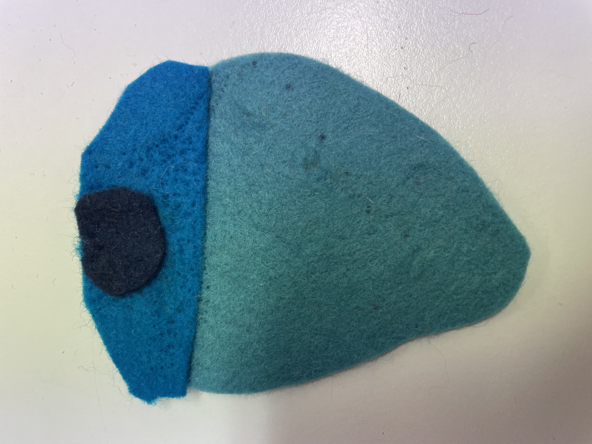
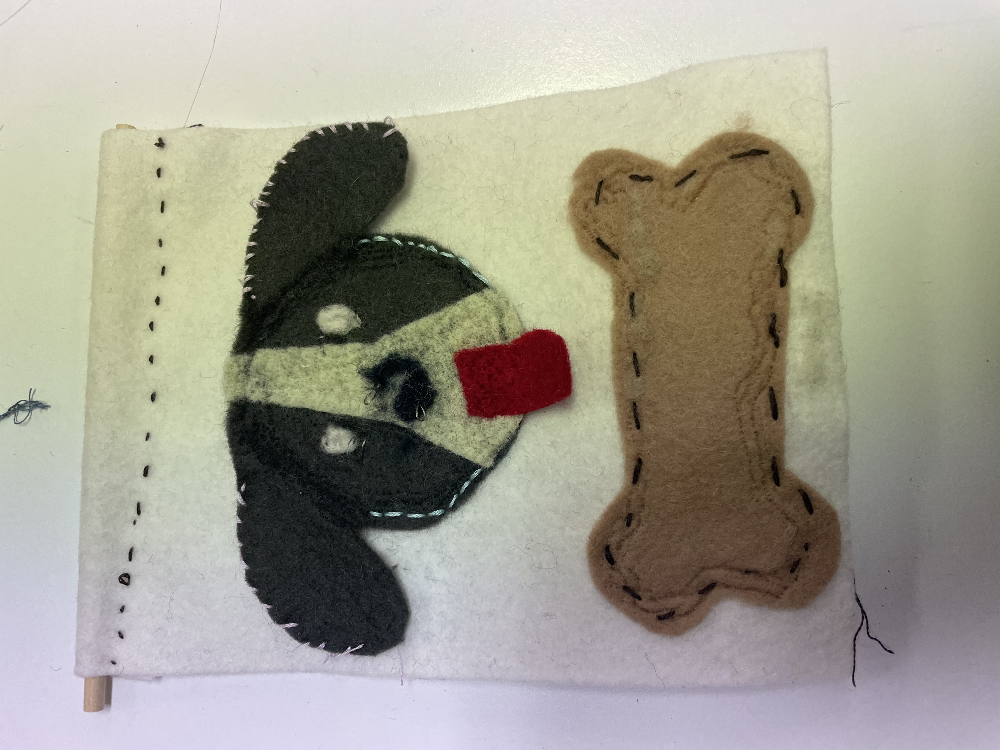
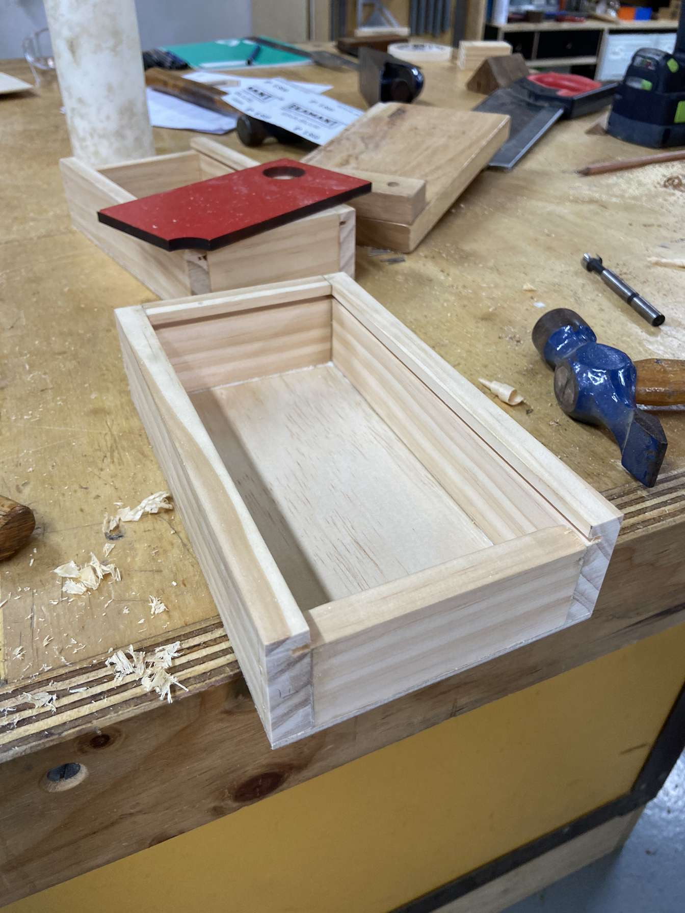
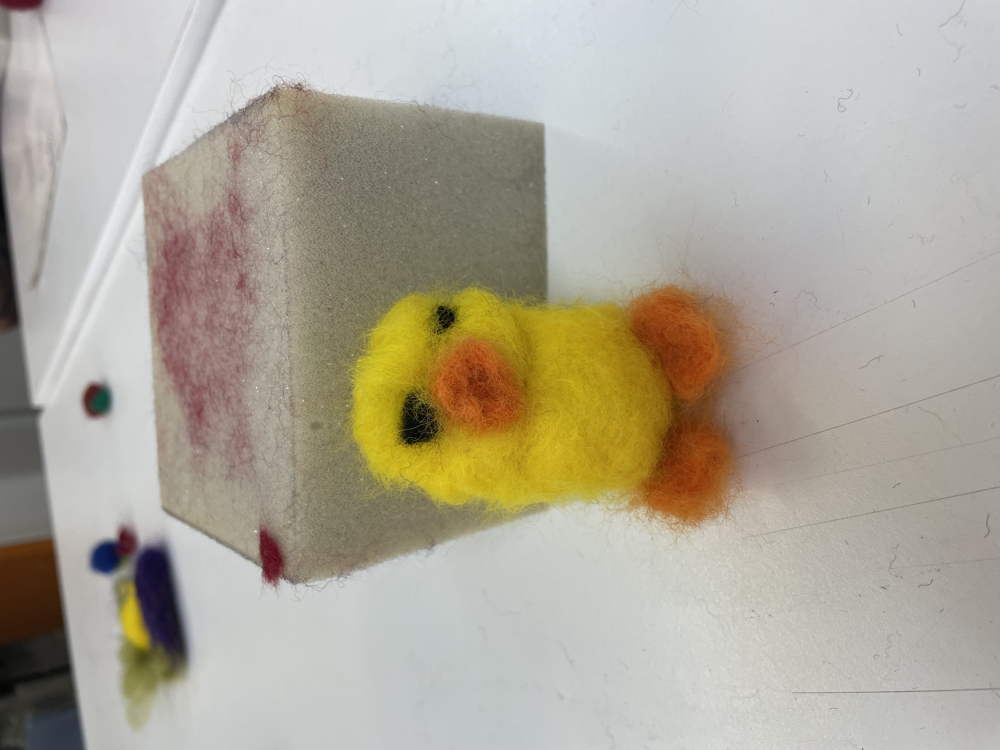

Student Work Sample

Stage 4 - Textiles: In this Stage 4 textiles project, students explore the process of felt-making by creating a flat piece of felt using traditional wet felting techniques. Once the felt is produced, students experiment with design by cutting into the surface to form patterns, shapes, or motifs. This allows them to consider both positive and negative space, while developing their creativity and fine motor skills. The project links practical making with design thinking, encouraging students to transform a basic textile into a unique, decorative piece.
Student Work Sample

Stage 4 - Textiles: In this Stage 4 textiles project, students design and construct a small banner that showcases hand-stitching techniques. They cut out simple shapes or motifs from felt and carefully stitch them onto a fabric background using decorative and functional stitches. This project helps students develop accuracy in cutting, confidence in stitching, and an understanding of how embellishment can be used to enhance textiles. The finished banner allows for creativity and personal expression, while building fundamental textile skills.
Student Work Sample

Stage 4 - Timber: In this Stage 4 timber project, students design and construct a small wooden pencil box using basic hand tools and machinery. The project introduces them to safe workshop practices such as measuring, marking out, cutting, sanding, and assembling with simple joints. Students also learn finishing techniques like staining or varnishing to protect and enhance the wood. By making the pencil box, students develop foundational skills in timber construction while producing a functional product that demonstrates accuracy, craftsmanship, and creativity.
Student Work Sample

Stage 4 - Textiles: In this Stage 4 textiles activity, students use felt fluff balls to construct a miniature duck. The project introduces students to shaping and joining techniques by combining small felted spheres of different sizes to form the head, body, wings, and beak. They experiment with sewing or gluing methods to connect the pieces, and can add simple embellishments such as stitched eyes or coloured felt details. This fun, hands-on project builds fine motor skills, encourages creativity, and gives students an accessible introduction to 3D textile construction.